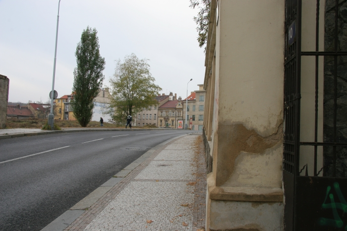

<?php
	$tabulka = true;

	require ('_include/php/zaklad.php');

	titulek ('Beuronské umìní - opatství sv. Gabriela');

	menu ('Pokraèovat na autobus','gabriel-autobus-02.html');

	zahlavi ();
?>




<?php
  zapati ();
?>
